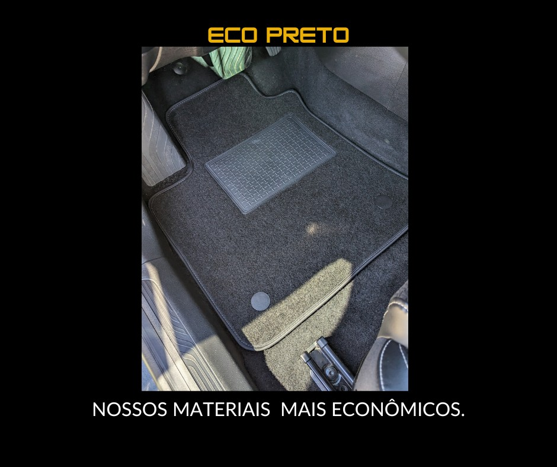
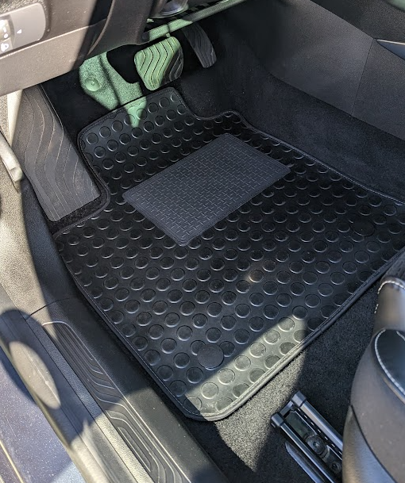

Alcatifa premium
Veludo
Acabamento macio e elegante para quem quer conforto e aspeto original.
desde 79 EUR
Escolher este material
Procure por marca ou modelo, escolha o material e avance para uma página dedicada quando ela já estiver pronta. Nos restantes modelos, enviamos o pedido guiado pelo WhatsApp.
Escolha a sua viaturaCompare os principais materiais e depois filtre pela viatura. O pedido final confirma molde, fixadores, mala e prazo.
Acabamento macio e elegante para quem quer conforto e aspeto original.

Visual mais desportivo, resistente e com boa presença no habitáculo.

Boa solução para substituir tapetes gastos com preço mais acessível.

Textura resistente para uso diário intenso, com acabamento à medida.

Fácil de lavar, indicada para chuva, trabalho, crianças e uso frequente.

Proteção reforçada com encaixe e rebordo elevado para conter sujidade.

Proteção à medida para a mala, em borracha ou alcatifa.
Estas são as 10 primeiras viaturas marcadas como prioridade aftermarket alta e página dedicada na lista.
Use a pesquisa para encontrar a viatura. Quando houver página dedicada, o botão leva para a página do modelo; caso contrário, abre o pedido rápido.